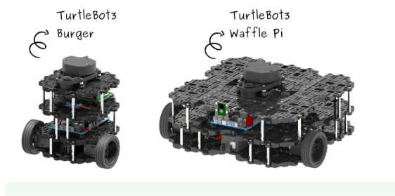
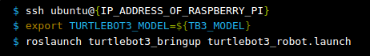
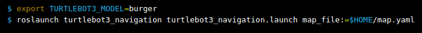
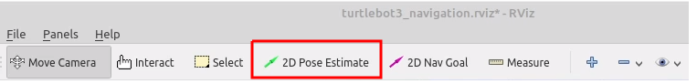
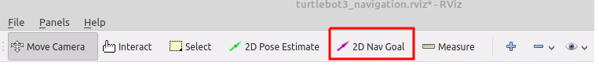
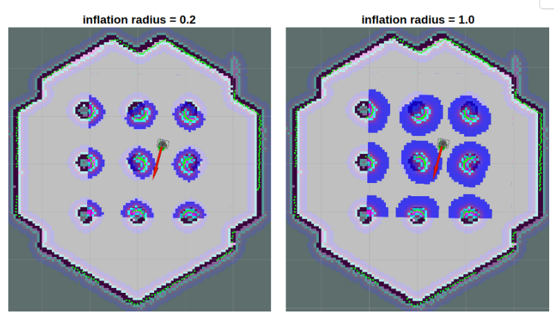

Turtlebot3
Turtlebot3
Здесь будет перевод пунктов из Turtlebot3

5 Navigation
Навигация предназначена для перемещения робота из одного места в указанное место назначения в заданной среде. Для этой цели требуется карта, содержащая информацию о геометрии мебели, объектов и стен в заданной среде. Как описано в предыдущем разделе SLAM, карта была создана на основе информации о расстоянии, полученной датчиком, и информации о позе самого робота.
Навигация позволяет роботу переходить от текущей позиции к указанной на карте цели, используя карту, кодер робота, датчик IMU и датчик расстояния. Процедура выполнения этой задачи следующая.
5.1 Run Navigation Nodes
- roscore
- Если на TurtleBot3 SBC не запущена программа Bringup, запустите ее. Пропустите этот шаг, если вы запускали программу bringup ранее.
Откройте новый терминал с удаленного ПК с помощью клавиш Ctrl + Alt + T и подключитесь к Raspberry Pi, указав его IP-адрес. Пароль по умолчанию - turtlebot. Пожалуйста, используйте правильное ключевое слово burger, waffle, waffle_pi для параметра TURTLEBOT3_MODEL.

- Запустите навигацию.
Пожалуйста, используйте правильное ключевое слово burger, waffle, waffle_pi для параметра TURTLEBOT3_MODEL.

5.2 Estimate Initial Pose (Оценить исходное положение)
Перед запуском навигации необходимо выполнить первоначальную оценку местоположения, поскольку этот процесс инициализирует параметры AMCL, которые имеют решающее значение для навигации. Робот TurtleBot3 должен быть правильно расположен на карте, а данные датчика LDS должны точно совпадать с отображаемой картой.
- Нажмите кнопку 2D Pose Estimate (2D-оценки положения) в меню RViz.

- Щелкните на карте, где находится настоящий робот, и перетащите большую зеленую стрелку в том направлении, куда направлен робот.
- Повторяйте шаги 1 и 2 до тех пор, пока данные датчика LDS не будут наложены на сохраненную карту.
- Запустите узел телеуправления с клавиатуры, чтобы точно определить местоположение робота на карте.
roslaunch turtlebot3_teleop turtlebot3_teleop_key.launch
Немного подвигайте робота взад-вперед, чтобы собрать информацию об окружающей среде и определить предполагаемое местоположение TurtleBot3 на карте, которая отображается крошечными зелеными стрелочками.
- Завершите работу узла дистанционного управления с клавиатуры, введя Ctrl + C в терминале узла дистанционного управления, чтобы предотвратить публикацию разных значений cmd_vel с нескольких узлов во время навигации.
5.3 Установить цель навигации
Нажмите кнопку "2D Nav Goal" в меню RViz.

Нажмите на карту, чтобы указать пункт назначения робота, и перетащите зеленую стрелку в том направлении, куда будет направлен робот. Эта зеленая стрелка является маркером, который может указывать пункт назначения робота. Корень стрелки - это координата x, y пункта назначения, а угол θ определяется ориентацией стрелки. Как только будут установлены значения x, y, θ, TurtleBot3 немедленно начнет движение к месту назначения.
5.4 Руководство по настройке
Навигационный стек содержит множество параметров, позволяющих изменять характеристики различных роботов.
Более подробную информацию о настройке навигации вы можете найти в руководстве по базовой настройке навигации,
руководстве по настройке навигации ROS от Кайю Чжэна
и в главе 11 книги по программированию роботов ROS.
5.4.1 Параметр inflation_radius
Определён в turtlebot3_navigation/param/costmap_common_param_${TB3_MODEL}.yaml
Этот параметр определяет область удаления от препятствия. Траектория должна быть спланирована таким образом, чтобы она не пересекала эту область. Можно с уверенностью установить значение, превышающее радиус действия робота. Для получения дополнительной информации, пожалуйста, обратитесь к вики-странице costmap_2d.

Пункты 6.1.1 и 6.1.2 выполнил на странице Gazebo.